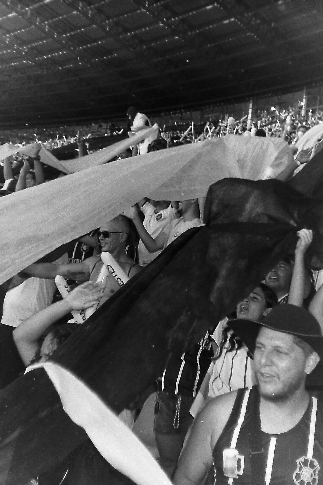
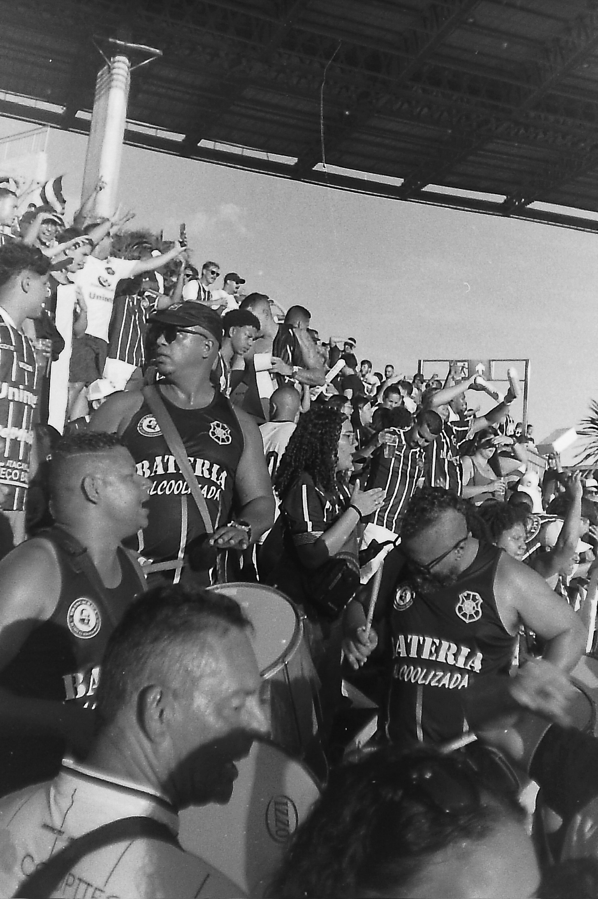
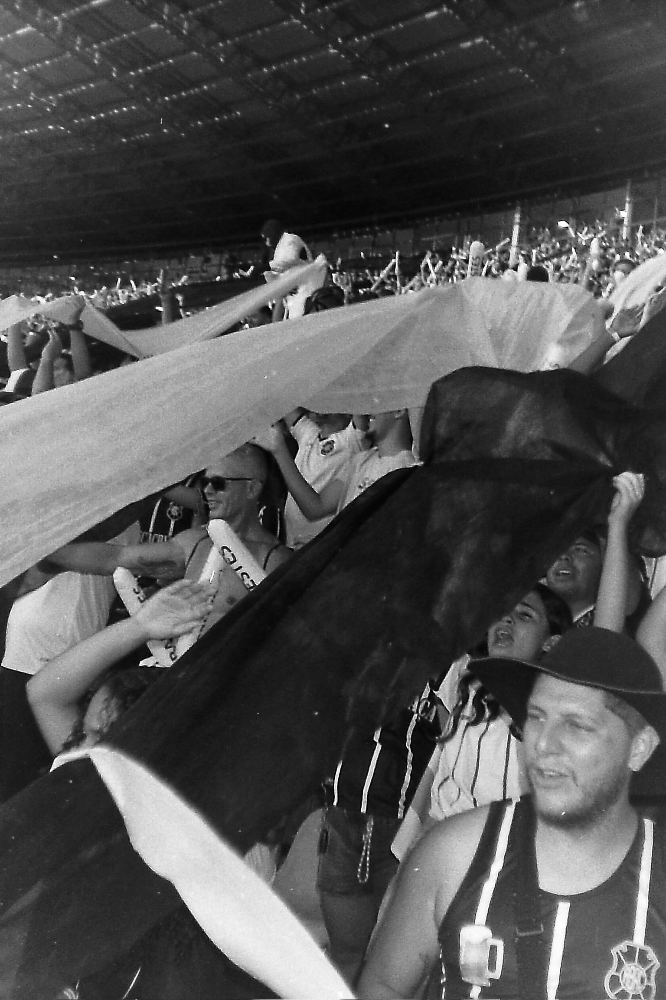
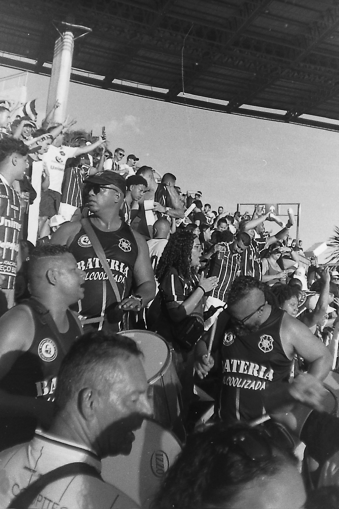
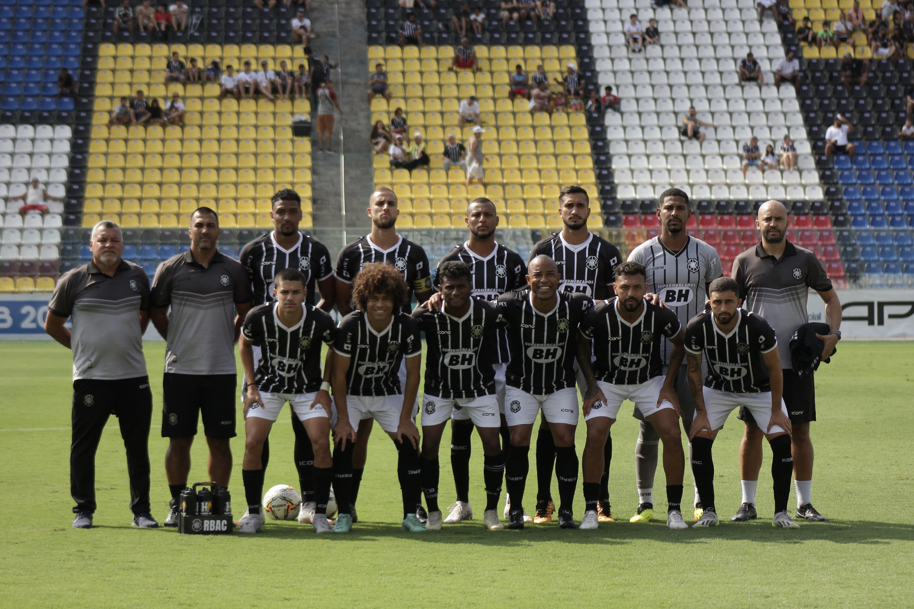
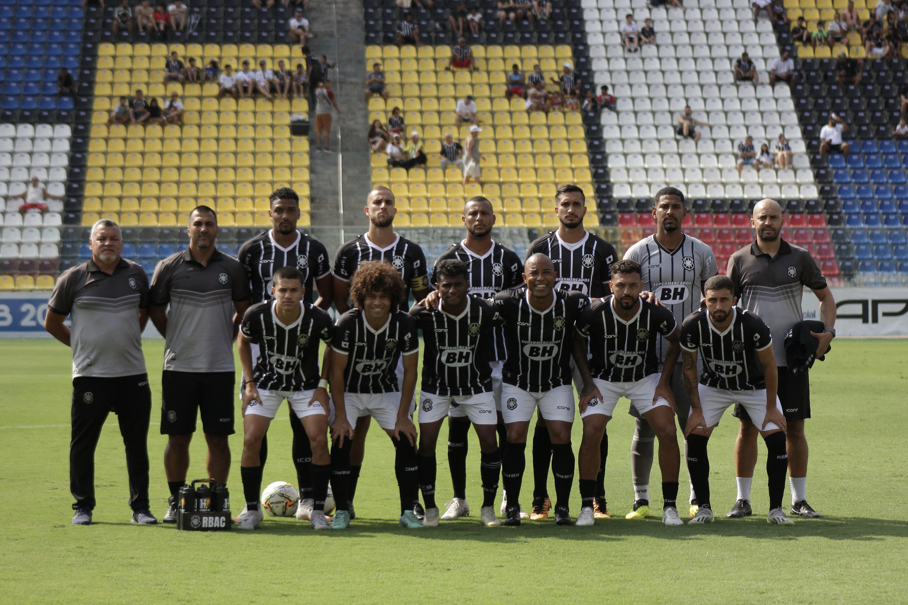

Intro
O Rio Branco Atlético Clube, carinhosamente conhecido como "Brancão", é um dos clubes de futebol mais emblemáticos e vitoriosos do Espírito Santo. Fundado em 21 de junho de 1913, na cidade de Vitória, o clube rapidamente se destacou no cenário esportivo estadual e nacional, tornando-se um verdadeiro ícone do futebol capixaba.
Com uma trajetória rica em conquistas, o Rio Branco é o maior detentor de títulos do Campeonato Capixaba, somando um impressionante total de 38 troféus. Essa supremacia no futebol estadual reflete não apenas a qualidade e a tradição do clube, mas também a paixão e o apoio incondicional de sua torcida, que acompanha o time em todos os momentos, sejam eles de glória ou de desafios.
A história do Rio Branco Atlético Clube é marcada por momentos inesquecíveis, jogos emocionantes e uma herança esportiva que atravessa gerações. Seu estádio, o Kléber Andrade, é palco de muitas dessas memórias, acolhendo torcedores e jogadores com um espírito vibrante e acolhedor.
Com mais de um século de existência, o Rio Branco continua a ser uma fonte de orgulho para o Espírito Santo, simbolizando a essência do futebol capixaba. Seu legado é um testemunho de dedicação, paixão e excelência no esporte, consolidando sua posição como o maior clube do estado.
Info
- O Rio Branco Atlético Clube foi fundado em 21 de junho de 1913 na cidade de Vitória, Espírito Santo.
- O clube recebeu o nome em homenagem ao Barão do Rio Branco, um importante diplomata brasileiro. As cores oficiais do clube são o preto e o branco.
- O Rio Branco manda seus jogos no Estádio Kléber Andrade.
- O clube é o maior campeão capixaba, atualmente com 38 títulos estaduais.
- Foi fundado por jovens pobres, que eram proibidos de jogar no clube dos burgueses de Bento Ferreira.
- Os principais rivais do Capa Preta são a Desportiva Ferroviária e o Vitória.
- O clube já participou de competições nacionais, como todas as divisões do futebol brasileiro.
- O mascote do clube é um cavaleiro com uma capa preta, simbolizando o ilustre torcedor Lafayette Cardoso.
Photos
 



 
